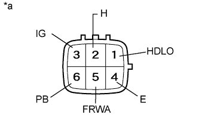

РЕЛЕ (для моделей с системой очистителей фар) > ПРОВЕРКА БЕЗ СНЯТИЯ С АВТОМОБИЛЯ |
| 1. ПРОВЕРЬТЕ УПРАВЛЯЮЩЕЕ РЕЛЕ ОЧИСТИТЕЛЯ ПЕРЕДНИХ ФАР |
|  |
Измерьте сопротивление в соответствии со значениями, приведенными в таблице ниже.
| Контакты для подключения диагностического прибора | Условие | Заданные условия |
| 6 (PB) - 4 (E) | Напряжение аккумуляторной батареи не подается | 10 кОм или более |
| Положительный (+) вывод аккумуляторной батареи → контакт 3 (IG) Отрицательный (-) вывод аккумуляторной батареи → контакт 4 (E) Отрицательный (-) вывод аккумуляторной батареи → контакт 5 (FRWA) | ||
| Положительный (+) вывод аккумуляторной батареи → контакт 3 (IG) Положительный (+) вывод аккумуляторной батареи → контакт 2 (H) Отрицательный (-) вывод аккумуляторной батареи → контакт 4 (E) | Менее 1 Ом в течение 0,8-0,9 с, после чего сопротивление значительно возрастает. | |
| Положительный (+) вывод аккумуляторной батареи → контакт 3 (IG) Положительный (+) вывод аккумуляторной батареи → контакт 1 (HDLO) Отрицательный (-) вывод аккумуляторной батареи → контакт 4 (E) Отрицательный (-) вывод аккумуляторной батареи → контакт 5 (FRWA) |
| *a | Устройство с отсоединенным жгутом проводов (управляющее реле очистителя фар) |